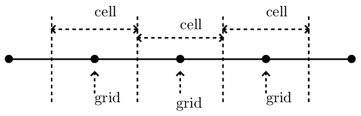

![∫ ∫ ∫ [ ( ) ][ ( ) ][ ( )]
-1--∑ αi+1∕2 βj+1∕2 γj+1∕2 --1- α−-αp- --1- β-−-βp -1-- γ-− γp
Ii,j,k = ΔV wpA (vp) αi−1∕2 βj−1∕2 γj−1∕2 Δ αpS1D Δαp Δ βpS1D Δ βp Δ γpS1D Δ γp dαd βdγ,
p](particle_simulation38x.png)
One of the most important methods of reducing collisions between markers when using very few markers to approximate a system with much more physical particles is to solve Maxwell’s equation on discrete grids and use the cell-averaged moments obtained from markers as the source term in the field equation.
To be clear, grid points and the corresponding cells are defined as illustrated in Fig. 2 for the 1D case.

Field solvers in PIC code need the values of I at the grid-points. This value at the grid point is defined as the average of I over the corresponding cells (similar to that in the finite element method), i.e.,
|
| (37) |
where ΔV = ∫ αi−1∕2αi+1∕2 ∫ βj−1∕2βj+1∕2 ∫ γk−1∕2γk+1∕2 𝒥dαdβdγ is the cell volume, which can be approximated as ΔV ≈𝒥i,j,kΔαΔβΔγ. Using Eqs. (36), the above expression is written as
|
| (38) |
Using the shape function given in expression (25), the above expression is written as
|
| (39) |
where the Jacobian in the integrand is cancelled out. The 3D integral in expression (39) consists of three identical 1D integrations. Consider one of them:
|
| (40) |
Consider the case Δαp = Δα, and choose S1D to be the l th order b-spline function, bl, then the above expression is written as
where bl+1 is the (l + 1)th order b-spline function. [Proof of Eq. (42): Using the property of the zeroth order b-spline function b0 (a flat top function), the integration (41) can be written as] Therefore expression (39) is written as
|
| (43) |
Recall that, in terms of the b-spline functions, the local value I(α,β,γ) is given by expression (36), i.e.,
|
| (44) |
It is instructive to compare expression (43) with (44), which indicates that they are similar except that the b-spline functions involved in the cell-averaged expression (43) is one order higher than that involved in the local expression (44).